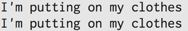

Classes vs Modules
June 5, 2015
Classes and modules can be daunting to work with and a bit confusing at first, but with a bit of practice and understanding they quickly become our allies when it comes to creating well designed code. First, lets talk about some of the fundamental qualities of both modules and classes, and the differences between them.
Modules are groups of methods that act like a function, and they can be included/mixed in with an unlimited number of classes. Classes are groups of behaviors and characteristics for specific objects, and they can only inherit from a single class. If you want to learn more about classes you can check out my blog post from last week. Modules, unlike classes, cannot be instantiated and must be included in a class definition.
This is all a bit confusing, so lets look at an example.
This will output the following:

As you can see, we’ve created a module called GetReady that is being included in both the shopping class and the exercise class. Take note of the syntax for creating a module. By including this module in our classes we are able to reference the methods within that module whenever we create new instance of the class. This is illustrated on lines 23 and 24. Creating a GetReady module makes sense because getting dressed is something we do for almost every activity. Instead of having to create a dressing method for every new class that relates to doing something, we can create a module to include in as many classes as we see fit. So, if you suspect that you might have a method that is likely to used across a multiple classes, it’s a good idea to put that in a module that you will include in your classes. This follows the D.R.Y. principle and is an efficient way to design your code.